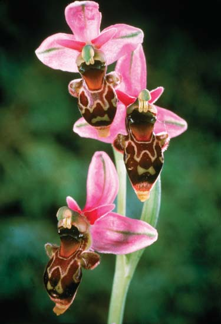
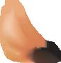
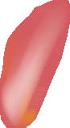
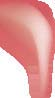
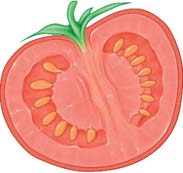

37 Reproducción en plantas con fl ores
781
CONCEPTOS CLAVE
37.1 La fl or es el sitio de reproducción sexual en las angiospermas. Una fl or típica consiste en cuatro verticilos: sépalos, pétalos, estambres y carpelos. 37.2 Los granos de polen se transportan a los estigmas mediante varios agentes, como animales y viento. 37.3 La doble fecundación resulta en una planta embrionaria y endosperma. La semilla es un óvulo maduro y el fruto es un ovario maduro. 37.4 Después de un período de latencia, una semilla germina, o retoña. La plántula se ancla en el suelo y comienza a fotosintetizar. 37.5 Muchos órganos vegetativos (raíces, tallos y hojas) están modifi cados para la reproducción asexual. 37.6 La reproducción sexual en las fl ores resulta en variabilidad genética en la descendencia, mientras que la reproducción asexual en las estructuras vegetativas por lo general resulta en individuos que son genéticamente idénticos.
L
as plantas con fl ores, o angiospermas , incluyen alrededor de 300,000 especies y son el grupo de plantas más grande y más exitoso. Usted habrá admirado fl ores por su fragancia o por sus atractivos colores y formas variadas (vea la fotografía). La función biológica de las fl ores es la reproducción sexual. Sus colores, formas y fragancias aumentan la probabilidad de que los granos de polen, que producen espermatozoides, sean transportados de una planta a otra. La reproducción sexual en las plantas incluye meiosis y la fusión de células reproductoras, ovocito y espermatozoide, llamados de manera colectiva gametos . La unión de gametos, llamada fecundación, ocurre dentro del ovario de la fl or. La reproducción sexual ofrece la ventaja de nuevas combinaciones genéticas, que no se encuentran en alguno de los progenitores, que pueden hacer que una planta individual esté mejor adaptada a su ambiente. Estas nuevas combinaciones resultan de la cruza y el ordenamiento independiente de cromosomas que ocurren durante la meiosis, antes de la producción de ovocitos y espermatozoides (vea el capítulo 11). Muchas plantas con fl ores también se reproducen asexualmente. La reproducción asexual con frecuencia no involucra la formación de fl ores, semillas y frutos. En vez de ello, la descendencia usualmente se forma cuando un órgano vegetativo (como tallo, raíz u hoja) se expande, crece y luego se separa del resto de la planta, con frecuencia mediante la muerte
Flor de álsine. Esta planta ( Stellaria media ) es una herbácea nativa anual de Europa pero ampliamente distribuida en América del Norte. Cada fl or tiene cinco sépalos verdes, cinco pétalos amarillos profundamente mellados, de tres a cinco estambres que portan polen (esta fl or tiene tres) y un solo pistilo.
Dr. Jeremy Burgess/Science Photo Library/Photo Researchers, Inc.
782 Capítulo 37
de tejidos. Puesto que la reproducción asexual requiere solamente un progenitor y no ocurre meiosis o fusión de gametos, los descendientes de la reproducción asexual virtualmente son genéticamente idénticos entre ellos y la planta progenitora. 1
Este capítulo examina las reproducciones sexual y asexual en las plantas con fl ores, incluidas las adaptaciones fl orales que son importantes en la polinización; la estructura y dispersión de semillas y frutos; la germinación y el crecimiento temprano; y muchos tipos de reproducción asexual. El capítulo concluye con una discusión acerca de las ventajas y desventajas evolutivas de las reproducciones sexual y asexual.
37.1 CICLO DE VIDA DE LAS PLANTAS CON FLORES
OBJETIVOS DE APRENDIZAJE
1 Describir las funciones de cada parte de una fl or. 2 Identifi car dónde se forman ovocitos y granos de polen dentro de la fl or.
En los capítulos 27 y 28 aprendió que las angiospermas y otras plantas experimentan una alternancia de generaciones cíclica en la que pasan una porción de su ciclo de vida en una etapa haploide multicelular y una porción en una etapa diploide multicelular. La porción haploide, llamada generación gametofi ta , da lugar a gametos mediante mitosis. Cuando dos gametos se fusionan durante la fecundación , comienza la porción diploide del ciclo de vida, llamado generación esporofi ta . La generación esporofi ta produce esporas haploides mediante meiosis. Cada espora tiene el potencial de producir una planta gametofi ta, y el ciclo continúa. En las plantas con fl ores la generación esporofi ta diploide es más grande y nutricionalmente independiente. La generación gametofi ta haploide, que se ubica en la fl or, es microscópica y nutricionalmente dependiente de la esporofi ta. Se hablará más acerca de la alternancia de generaciones en las plantas con fl ores después del estudio del papel de las fl ores como estructuras reproductoras. (Puede ser de utilidad la revisión de la fi gura 28-13, que muestra las principales etapas en el ciclo de vida de las plantas con fl ores).
Las fl ores se desarrollan en meristemas apicales
¿Cómo “sabe” una planta que es el momento de comenzar la formación de fl ores? La temporización correcta en el cambio desde el desarrollo vegetativo hacia el reproductor es crucial para asegurar el éxito reproductivo. Varias claves ambientales, como la temperatura y la duración del día, garantizan la temporización adecuada, y diferentes especies están adaptadas para responder a distintas claves ambientales. Tales señales ambientales interactúan con varias hormonas vegetales y rutas de desarrollo. En años recientes algunos biólogos se enfocaron en los aspectos moleculares de las rutas de desarrollo que inician el fl orecimiento en plantas como el organismo modelo Arabidopsis . Cuando las condiciones ambientales inducen la fl oración, muchos genes se activan o
desactivan. El gen Flowering Locus ( FLC ) codifi ca un factor de transcripción que inhibe la fl oración. Otro gen, llamado gen Flowering Locus D ( FLD ), codifi ca una proteína que remueve grupos acetilo de histones en la cromatina donde se ubica el gen FLC . Cuando ocurre la desacetilación, el gen FLC no se transcribe (esto es: el factor de transcripción represivo no se produce), y el meristema apical de brote experimenta una transición del crecimiento vegetativo al crecimiento reproductivo. Es intrigante que la proteína FLD vegetal sea homóloga a una proteína mamífera que también remueve grupos acetilo de cromatina. Otros genes también están involucrados en el inicio de la fl oración, y esta área sigue siendo un foco de activo interés en investigación. En el capítulo 38 se estudiará el inicio de la fl oración con más detalle.
Cada parte de una fl or tiene una función específi ca
Las fl ores son brotes reproductores, y por lo general consisten de cuatro tipos de órganos (sépalos, pétalos, estambres y carpelos) ordenados en verticilos (círculos) en el extremo del tallo de una fl or ( FIGURA 37-1 ; vea también la fi gura 28-11). En las fl ores con los cuatro órganos, el orden normal de los verticilos desde la periferia de la fl or hacia el centro (o desde la base de la fl or hacia arriba) es el siguiente:
sépalos ¡ pétalos ¡ estambres ¡ carpelos
La punta del tallo se alarga para formar un receptáculo en donde se encuentran alguna o todas las partes de la fl or. Las cuatro partes fl orales son importantes en el proceso de reproducción, pero sólo los estambres (los órganos “masculinos”) y los carpelos (los órganos “femeninos”) participan directamente en la reproducción sexual; sépalos y pétalos son estériles. Los sépalos , que constituyen el verticilo más externo y más bajo sobre el brote fl oral, cubren y protegen las partes de la fl or cuando la fl or es una yema. Los sépalos tienen forma de hoja y con frecuencia son verdes. Algunos sépalos, como los de los lirios, son coloridos y parecen pétalos ( FIGURA 37-2 ). El término colectivo para todos los sépalos de una fl or es cáliz . El verticilo justo adentro y arriba de los sépalos consiste en pétalos , que son amplios, aplanados y delgados (como sépalos y hojas) pero varían enormemente en forma y con frecuencia tienen brillantes colores que atraen a los polinizadores. Los pétalos tienen un importante papel para garantizar que ocurrirá reproducción sexual. En ocasiones los pétalos se fusionan para formar un tubo u otra forma fl oral. El término colectivo para todos los pétalos de una fl or es corola . Justo adentro y arriba de los pétalos están los estambres , los órganos reproductores masculinos. Cada estambre tiene un tallo delgado, llamado fi lamento , en cuya parte superior hay una antera , una estructura con forma de saco donde se forman granos de polen . Para que ocurra la reproducción sexual, los granos de polen deben transferirse desde la antera hasta la estructura reproductora femenina (el carpelo), generalmente de otra fl or de la misma especie. Al principio, cada grano de polen consiste en dos células rodeadas por una gruesa pared exterior. Una célula, la célula generativa , se divide mitóticamente para formar dos gametos masculinos no fl agelados, conocidos como espermatozoides . La otra célula, la célula tubo , produce un tubo polínico , a través del cual viajan los espermatozoides para alcanzar el óvulo. Uno o más carpelos , los órganos reproductores femeninos, se ubican en el centro o parte superior de la mayoría de las fl ores. Los carpelos tienen óvulos , que son estructuras con el potencial para desarrollarse
1 Entre la descendencia derivada asexualmente puede producirse cierta variabilidad mediante mutaciones somáticas.
Reproducción en plantas con flores 783
de cuello a través del cual crece el tubo polínico; y un ovario , una estructura con forma de jarro que contiene uno o más óvulos y puede desarrollarse hasta ser un fruto. En la estructura de las fl ores se presenta considerable variación de una especie a otra, pero la estructura fl oral virtualmente es constante dentro de una especie dada. Por dicha razón, la estructura fl oral es importante en la identifi cación de las plantas y, si hay fl ores presentes, las especies de plantas con fl ores son fáciles de evaluar en el campo.
Los gametofi tos femeninos se producen en el ovario, los gametofi tos masculinos en la antera
Antes de continuar, resultará útil relacionar las etapas de la alternancia de generaciones con la estructura fl oral. Como estudió en los capítulos 27 y 28, las angiospermas y ciertas plantas son heterosporas y producen dos tipos de esporas: megasporas y microsporas ( FIGURA 37-3 ). Cada óvulo joven dentro de un ovario contiene una célula diploide, el megasporocito , que experimenta meiosis para producir cuatro megasporas haploides. Tres de éstas por lo general se desintegran, y la cuarta, la megaspora funcional, se divide mitóticamente para producir un gametofi to femenino multicelular, también llamado saco embrionario . El gametofi to femenino, que está incrustado en el óvulo, usualmente contiene siete células con ocho núcleos haploides. Seis de estas células, incluyendo el ovocito (el gameto femenino), contienen un solo núcleo cada una; una gran célula central tiene dos núcleos, llamados núcleos polares . El ovocito y ambos núcleos polares participan directamente en la fecundación.
hasta convertirse en semillas. Los carpelos de una fl or pueden estar separados o fusionados en una sola estructura. La parte femenina de la fl or, con frecuencia llamada pistilo , puede ser un solo carpelo (un pistilo simple ) o un grupo de carpelos fusionados (un pistilo compuesto ) (vea la fi gura 28-12). Cada pistilo tiene tres secciones: un estigma , sobre el cual aterrizan los granos de polen; un estilo , una estructura con forma
Corte de una flor de Arabidopsis. Cada flor tiene cuatro sépalos ( se muestran dos ), cuatro pétalos ( se muestran dos ), seis estambres y un largo pistilo. Cuatro de los estambres son largos y dos son cortos ( se muestran dos largos y dos cortos ). Los granos de polen se desarrollan dentro de sacos en las anteras. En Arabidopsis , el pistilo compuesto consiste en dos carpelos que contienen cada uno numerosos óvulos.
Flor de Arabidopsis thaliana .
Darwin Dale/Photo Researchers, Inc.
PISTILO (consiste en uno o más carpelos)
Estigma
Estilo
ESTAMBRE
Antera
Filamento Ovario
Óvulos (cada uno produce un ovocito)
Partes florales femeninas Partes florales masculinas
Grano de polen (cada uno producirá dos espermatozoides)
Pétalo
Sépalo Receptáculo
Pedúnculo
FIGURA 37-1 Animada Estructura fl oral
784 Capítulo 37
Muchas plantas tienen mecanismos que evitan la autopolinización
En la reproducción sexual vegetal, los dos gametos que se unen para formar un cigoto pueden provenir del mismo progenitor o de dos progenitores diferentes. La combinación de gametos de dos progenitores distintos aumenta la variación en la descendencia y esta variación puede conferir una ventaja selectiva. Por ejemplo, algunos descendientes pueden sobrevivir los cambios ambientales mejor que cualquiera de los progenitores. La evolución resultó en varios mecanismos que evitan la autopolinización y en consecuencia evitan la endogamia , que es el apareamiento de individuos genéticamente similares. La endogamia puede aumentar la concentración de genes nocivos en la descendencia. Algunas plantas, como el espárrago y el sauce, tienen individuos masculino y femenino separados; las plantas masculinas tienen fl ores estaminíferas que carecen de carpelos, y las plantas femeninas tienen fl ores con pistilos que carecen de estambres. Otras especies tienen fl ores tanto con estambres como con pistilos, pero el polen se desprende de una fl or dada o antes o después del momento cuando el estigma de dicha fl or está receptiva para el polen. Dichas características promueven la exogamia , que es el apareamiento de individuos no similares. Muchas especies tienen genes para la autoincompatibilidad , una condición genética en la que el polen no es efectivo para fecundar la misma fl or u otras fl ores en la misma planta. En otras palabras, una planta individual puede identifi car y rechazar su propio polen. Los genes para autoincompatibilidad por lo general inhiben el crecimiento del tubo polínico en el estigma y el estilo, lo que en consecuencia evita la entrega de espermatozoides a los óvulos. La autoincompatibilidad, que es más común en las especies silvestres que en las plantas cultivadas, asegura que la reproducción ocurra sólo si el polen proviene de un individuo genéticamente diferente. En plantas como la canola, la autoincompatibilidad se basa en un alto grado de variación en un locus particular llamado locus S ; los muchos alelos en este locus se designan S 1 , S 2 , S 3 , S 4 , etcétera. He aquí un ejemplo de cómo el locus S bloquea la autofecundación: una planta con el genotipo S 1 S 2 produce granos de polen que aterrizan en un estigma de otra planta con el genotipo S 1 S 3 . En este caso, la presencia del alelo S 1 tanto en el polen como en el estigma dispara una cascada de señalización de autorreconocimiento en células superfi ciales del estigma. Como resultado, las células de estigma no experimentan cambios que permitan que crezca el tubo polínico a partir del grano de polen. Por lo tanto, no ocurre la fecundación. La base molecular de la autoincompatibilidad en Arabidopsis y plantas relacionadas es un área de activo interés científi co. Arabidopsis puede autopolinizarse. Los biólogos determinaron que en Arabidopsis existen los genes involucrados en la autoincompatibilidad y la exogamia, pero que experimentaron mutaciones de modo que ya no son funcionales. Por lo tanto, parece que la autoincompatibilidad en dichas plantas es la condición ancestral (normal).
Las plantas con fl ores y sus animales polinizadores coevolucionaron
Los animales polinizadores y las plantas que polinizan han tenido relaciones interdependientes tan cercanas a lo largo del tiempo que afectaron la evolución de ciertas características físicas y ambientales. El término coevolución describe tal adaptación recíproca, en la que dos especies interactúan de manera tan cercana que se adaptan cada vez más una a otra conforme cada una experimenta cambios evolutivos por se-
Los sacos de polen dentro de la antera contienen numerosas células diploides llamadas microsporocitos , cada uno de los cuales experimenta meiosis para producir cuatro células haploides llamadas microsporas . Cada microspora se divide mitóticamente para producir un gametofi to masculino inmaduro, también llamado grano de polen, que consiste en dos células, la célula tubo y la célula generativa. El grano de polen madura cuando su célula generativa se divide para formar dos espermatozoides no mótiles.
Repaso
■ ¿Cómo difi eren los pétalos de los sépalos? ¿En qué se parecen?
■ ¿Cómo difieren los estambres de los carpelos? ¿En qué se parecen?
■ ¿Qué son los gametofitos femeninos y dónde se forman?
■ ¿Qué son los gametofi tos masculinos y dónde se forman?
37.2 POLINIZACIÓN
OBJETIVOS DE APRENDIZAJE
3 Comparar las adaptaciones evolutivas que caracterizan las fl ores polinizadas en diferentes formas (por insectos, aves y murciélagos). 4 Defi nir la coevolución y dar ejemplos de formas en que las plantas y sus animales polinizadores afectaron la evolución unos de otras.
Antes de que pueda ocurrir la fecundación, los granos de polen deben viajar desde la antera (donde se forman) hasta el estigma. La transferencia de granos de polen desde la antera hasta el estigma se conoce como polinización . Las plantas se autopolinizan si la polinización ocurre dentro de la misma fl or o una fl or diferente de la misma planta individual. Cuando los granos de polen se transfi eren a una fl or en otro individuo de la misma especie, la planta tiene polinización cruzada . Las plantas con fl ores logran la polinización en varias formas. Escarabajos, abejas, moscas, mariposas, polillas, avispas y otros insectos polinizan muchas fl ores. Animales como aves, murciélagos, caracoles y pequeños mamíferos no voladores (roedores, primates y marsupiales) también polinizan plantas. El viento es un agente de polinización de ciertas fl ores; y el agua, para algunas fl ores acuáticas.
© dinadesign/Shutterstock
FIGURA 37-2 Flores de lirio En los lirios ( Lilium ) los tres sépalos y tres pétalos son similares en tamaño y color.
Reproducción en plantas con flores 785
recompensa para el polinizador animal es alimento. Los granos de polen son un alimento rico en proteínas para muchos animales. Conforme se mueven de fl or a fl or en busca de alimento, los polinizadores de manera inadvertida transportan granos de polen sobre partes de sus cuerpos, lo que ayuda a las plantas a reproducirse sexualmente.
lección natural . Ahora se examinará algunas de las características de las fl ores y sus polinizadores que pudieran ser productos de coevolución. Las fl ores polinizadas por animales tienen varias características para atraer a sus polinizadores, incluidos pétalos vistosos (un atractivo visual) y aroma (un atractivo olfatorio) ( FIGURA 37-4 y TABLA 37-1 ). Una
En la alternancia de generaciones de las plantas con fl ores, los gametofi tos femenino y masculino son microscópicos y mutuamente dependientes de la planta esporofi ta.
Megaspora funcional
Megaspora en desintegración (3)
Células antípodas
Sinérgidas
Integumentos
Saco de polen joven con numerosos microsporocitos
Gametofito femenino (saco embrionario)
Núcleos polares en una célula central
Ovocito
Microsporocito
Meiosis
Microsporas (4)
Microspora individual
Célula generativa (se dividirá para formar 2 espermatozoides)
Célula tubo
Mitosis
Grano de polen (gametofito masculino inmaduro)
Óvulo joven (megasporangio)
Megasporocito
Meiosis
Mitosis (3 divisiones)
FIGURA 37-3 Animada Desarrollo de gametofi tos femenino y masculino ( Lado izquierdo ) El gametofi to femenino, o saco embrionario, se desarrolla dentro del óvulo. ( Lado derecho ) Los gametofi tos masculinos inmaduros, o granos de polen, se desarrollan dentro de sacos de polen en las anteras.
PUNTO CLAVE
786 Capítulo 37
Dr. John Brackenbury/Science Photo Library/Photo Researchers, Inc.
Una abeja ( Apis mellifera ) poliniza una flor de retama negra ( Cytisus scoparius ). Cuando la abeja presiona para obtener néctar, los estambres brincan y sueltan granos de polen sobre el cuerpo de la abeja.
Un escarabajo australiano Metriorrhynchus rhipidus obtiene néctar de un árbol de té australiano ( Leptospermum laevigatum ).
Una mariposa tigre del oriente con alas posteriores bifurcadas ( Pterourus glaucas ) obtiene néctar de flores de asclepias ( Asclepias tuberosa ). Fotografiada en Michigan.
La estapelia ( Stapelia sp. ), que tiene pétalos que parecen sangre seca, emite un olor fétido. A esta planta del desierto la polinizan moscas. Fotografiada en el Fairchild Tropical Garden en Miami, Florida.
Las marcas ultravioletas en la onagra ( Oenothera sp. ) llaman la atención hacia el centro de la flor, donde los insectos encuentran néctar y granos de polen. El ojo humano percibe la flor como amarillo sólido ( izquierda ). La misma flor vista bajo radiación ultravioleta ( derecha ) ofrece pistas acerca de cómo la percibe el ojo del insecto. Las porciones en azul claro de los pétalos pueden parecer morado para una abeja, mientras que las partes internas en azul oscuro pueden parecer amarillas.
Ed Reschke/Peter Arnold, Inc.
© Graphic Science/Alamy © Gertjam Hooijer/Shutterstock
Linda R. Berg
Thomas Eisner, Cornell University
© Merlin Tuttle/Bat Conservation International/Photo Researchers, Inc.
- Un murciélago hocicudo de Curazao ( Leptonycteris curasoae ) obtiene néctar de la flor de un cardón ( Pachycereus ) y transfiere polen conforme se mueve de flor a flor. Los murciélagos polinizan varios cientos de especies de plantas.
FIGURA 37-4 Flores y sus polinizadores animales


Reproducción en plantas con flores 787
mado morado de abeja . Muchas fl ores tienen sorprendentes marcas UV que pueden o no ser visibles para los humanos, pero que dirigen a los insectos hacia el centro de la fl or donde están los granos de polen y el néctar. Los insectos tienen un sentido bien desarrollado del olfato, y muchas fl ores polinizadas por insectos tienen un fuerte aroma que puede ser agradable o repulsivo para los humanos. Por ejemplo, la planta cadáver es polinizada por moscas y huele como la carne en descomposición donde las moscas ponen sus huevos. Conforme las moscas se mueven de una fl or hedionda a otra en busca de un lugar para poner sus huevos, transfi eren granos de polen. Aves como los colibríes son importantes polinizadores. Las fl ores polinizadas por aves generalmente son rojas, anaranjadas o amarillas porque las aves ven bien en este rango de luz visible. Dado que la mayoría de las aves no tienen un fuerte sentido del olfato, las fl ores polinizadas por aves por lo general carecen de aroma. Los murciélagos, que se alimentan de noche y no ven bien, son importantes polinizadores, particularmente en los trópicos. Las fl ores polinizadas por murciélagos abren de noche y tienen pétalos blancos opacos y una fuerte emanación de aroma durante la noche que general-
Algunas fl ores producen néctar, una solución azucarada, en glándulas fl orales especiales llamadas nectarios . Los polinizadores usan néctar, que también es rico en aminoácidos, alcaloides y otros químicos fl o rales, como alimento rico en energía. Algunos néctares contienen alcaloides como la nicotina para evitar que los polinizadores animales beban todo el néctar en una sola visita. (La nicotina es tóxica). Por ende, los polinizadores son alentados a visitar múltiples fl ores, y cada fl or tiene múltiples visitantes polinizadores. Los biólogos estiman que los insectos polinizan aproximadamente 70% de todas las especies de plantas con fl ores. Las abejas son particularmente importantes polinizadoras de plantas de cultivo. Los cultivos polinizados por abejas proporcionan alrededor del 30% del alimento humano. Las plantas polinizadas por insectos con frecuencia tienen pétalos azules o amarillos. El ojo del insecto no ve el color de la misma forma que los humanos. La mayoría de los insectos ven bien en el rango violeta, azul y amarillo de la luz visible, mas no perciben el rojo como un color distinto. De modo que las fl ores polinizadas por insectos generalmente no son rojas. Los insectos también ven en el rango ultravioleta, longitudes de onda que son invisibles para el ojo humano. Los insectos ven la radiación ultravioleta como un color lla-
Una orquídea ( Ophrys scolopax ) que imita abejas hembra atrae abejas macho, y por lo tanto logra la polinización.
Un colibrí de pico ancho obtiene néctar de una flor del desierto, ocotillo ( Fouquieria splendens ), en Arizona. Los granos de polen en las plumas del ave se transportan a la siguiente planta.
© Malcolm Schuyl/Alamy
Nuridsany et Perrenou/Photo Researchers, Inc.
FIGURA 37-4 ( continuación )
Características fl orales asociadas con varios polinizadores animales
Polinizador animal Color de fl or común Aroma Recompensa del polinizador Tiempo de fl oración
Abeja Amarillo, azul, morado Fuerte, fl oral Néctar, polen Día
Mariposa Rojo, rosa Débil, fl oral Néctar Día
Polilla Blanco Fuerte, dulce Néctar Crepúsculo, noche
Moscardón Café rojizo, morado Fuerte, podrido Sin recompensa Día, noche
Escarabajo Verde, blanco Fuerte, varios aromas Néctar, polen Día, noche
Ave Rojo, rosa Sin aroma Néctar Día
Murciélago Blanco Fuerte, almizclado o dulce Néctar, polen Noche
TABLA 37-1

788 Capítulo 37
resultado del pastoreo de las vacas y cabras silvestres no nativas, y alrededor del 25% de las especies de lobelia se extinguieron. Ahora el ’i’iwi se alimenta principalmente de las fl ores del árbol ’ohi’a, que carece de pétalos, y el pico del ’i’iwi parece adaptarse a este cambio en preferencia alimenticia. La comparación de los picos de especímenes museográfi cos de ’i’iwi recolectados en 1902, con los picos de aves vivas capturadas en la década de 1990, mostraron que los picos de los ’i’iwi eran aproximadamente 3% más cortos en la década de 1990 que en 1902. Las plantas y el comportamiento de sus polinizadores coevolucionaron, en ocasiones en formas extrañas y complejas. Las fl ores de ciertas orquídeas ( Ophrys ) parecen abejas femeninas en coloración y forma. Las fl ores no polinizadas segregan un aroma similar al producido por las abejas hembra, y los machos son atraídos irresistiblemente a ellas. El parecido entre las fl ores Ophrys y las abejas hembra es tan fuerte que la abeja macho monta las fl ores y trata de copular con ellas. Durante esta pseudocopulación , generalmente un saco de polen se adhiere al dorso de la abeja. Cuando la abeja frustrada se aleja e intenta copular con otra fl or de orquídea, los granos de polen se transfi eren a dicha fl or. Es interesante que, una vez que una fl or fue polinizada, emite un aroma como el liberado por las abejas hembra que ya copularon. Las abejas macho no tienen interés en visitar las fl ores que fueron polinizadas (tal como pierden interés en las abejas hembra que ya fueron inseminadas).
mente huele como fruta fermentada. Los murciélagos que se alimentan de néctar son atraídos hacia las fl ores por el aroma; lamen el néctar con sus largas lenguas extendibles. Conforme se mueven de fl or a fl or transfi eren granos de polen. Una rara adaptación que alienta la polinización de los murciélagos evolucionó en la enredadera tropical Mucana holtonii . Cuando el polen en una fl or dada está maduro, un pétalo cóncavo se eleva. El pétalo rebota los llamados de ecolocalización del murciélago de regreso al animal, lo que lo ayuda a encontrar la fl or. Características especializadas como pétalos, aroma y néctar para atraer polinizadores coevolucionaron con adaptaciones de los polinizadores animales. Partes corporales y comportamientos especializados adaptaron a los animales para ayudar a la polinización mientras obtienen néctar y granos de polen como recompensa. Por ejemplo, la coevolución seleccionó los cuerpos peludos de los abejorros, que atrapan y retienen los granos de polen pegajosos para transportarlos desde una fl or hacia otra. La coevolución pudo conducir a los largos picos curvos del ’i’iwi, uno de los pinzones hawaianos, que inserta su pico en fl ores tubulares para obtener néctar (vea las fi guras 1-13b y 20-18). La larga corola tubular de las fl ores que visitan los ’i’iwis probablemente también se produjeron por coevolución. Durante el siglo xx, algunas de las especies de fl ores tubulares (como las lobelias) se volvieron raras, principalmente como
EXPERIMENTO CLAVE
PREGUNTA: ¿Una sola mutación genética en el color de la fl or puede afectar a los polinizadores animales?
HIPÓTESIS: Si el color de la fl or cambia por mutación, pueden cambiar las preferencias del polinizador para la fl or resultante.
EXPERIMENTO: Mimulus lewisii tiene fl ores violeta-rosa y es polinizada por abejorros; la cercanamente emparentada M. cardinalis tiene fl ores anaranjado-rojo y es polinizada por colibríes. Alelos en el mismo locus en ambas especies afectan el color de la fl or. Investigadores transfi rieron el alelo para fl ores anaranjado-rojo de M. cardinalis a M. lewisii , que entonces produjo pétalos amarillo-anaranjados. También transfi rieron el alelo para fl ores rosa de M. lewisii a M. cardinalis , que entonces produjo pétalos rosa oscuro.
M. lewisii tipo silvestre
Nature, Vol. 426, 13 de noviembre de 2003.
M. cardinalis tipo silvestre
Nature, Vol. 426, 13 de noviembre de 2003.
Nature, Vol. 426, 13 de noviembre de 2003.
M. lewisii alterada
M. cardinalis alterada
Nature, Vol. 426, 13 de noviembre de 2003.
RESULTADOS Y CONCLUSIÓN: Las fl ores de M. lewisii modifi cadas tenían color amarillo-anaranjado y tuvieron 68 veces más visitas de colibríes que las fl ores de M. lewissi no alterada. Las fl ores de M. cardinalis modifi cada tenían pétalos rosa oscuro y fueron visitadas 74 veces más por abejorros que las fl ores de M. cardinalis no alteradas. Por ende, una sola mutación en un gen para el color de fl or resultó en un cambio en los polinizadores animales.
FIGURA 37-5 Estudio de cómo pudieron evolucionar las preferencias del polinizador Biólogos de la Universidad de Washington y de la Michigan State University usaron fl ores mono para determinar si una sola mutación genética tendría algún efecto sobre polinizadores animales.









Reproducción en plantas con flores 789
plumosos, presumiblemente para atrapar los granos de polen transportados por el viento. Puesto que la polinización por el viento es cuestión de puntería, la probabilidad de que un grano de polen particular aterrice sobre un estigma de la misma especie de fl or es pequeña. Las plantas polinizadas por el viento producen grandes cantidades de granos de polen, lo que aumenta la posibilidad de que algunos granos de polen aterrizarán sobre el estigma adecuado.
Repaso
■ Una fl or tiene pétalos amarillos, un aroma agradable y néctar azucarado. ¿Cómo es probable que se polinice?
■ Una fl or tiene pequeñas fl ores poco visibles, sin pétalos, aroma o néctar. ¿Cómo es probable que se polinice?
■ ¿Qué es coevolución?
37.3 FECUNDACIÓN Y DESARROLLO DE SEMILLA/FRUTO
OBJETIVOS DE APRENDIZAJE
5 Distinguir entre polinización y fecundación. 6 Trazar las etapas del desarrollo embrionario en las plantas con fl ores, y mencionar y defi nir las principales partes de las semillas. 7 Explicar las relaciones entre los siguientes: óvulos, ovarios, semillas y frutos. 8 Distinguir entre frutos simples, agregados, múltiples y accesorios.
Después de que los granos de polen se transfi eren de la antera al estigma, la célula tubo, una de las dos células en el grano de polen, produce un delgado tubo polínico a través del estilo y hacia el óvulo en el ovario. ¿Cómo “sabe” el tubo polínico dónde crecer? Los científi cos descubrieron que las señales moleculares de la gametofi ta femenina guía el tubo polínico en crecimiento hacia el óvulo. En 2001, las células sinérgidas ubicadas adyacentes al ovocito fueron identifi cados como la fuente de dichas señales moleculares. La naturaleza química de estos atrayentes del tubo polínico era desconocida hasta 2009, cuando dos señales de atracción (llamadas LURE), ambos pequeños polipéptidos, fueron identifi cadas en torenia ( Torenia fournieri ) y reportadas en la revista Science . Una vez que el tubo polínico penetra el óvulo, las señales atrayentes ya no se producen. Como resultado, sólo un tubo polínico entra a cada gametofi to femenino. La segunda célula dentro del grano de polen se divide para formar dos gametos masculinos (los espermatozoides), que se mueven por el tubo polínico y entran al óvulo ( FIGURA 37-7 ).
En las plantas con fl ores ocurre un proceso único de doble fecundación
El ovocito dentro del óvulo se une con uno de los espermatozoides y forma un cigoto (ovocito fecundado) que se desarrolla hasta ser una planta embrionaria contenida en la futura semilla. Los dos núcleos polares en la célula central del óvulo se fusionan con el segundo espermatozoide para formar la primera célula del endosperma triploide (3 n ), el tejido con funciones nutritivas y hormonas que rodea a la planta embrionaria en desarrollo dentro de la semilla. Este proceso, en el que ocurren dos fusiones celulares separadas, se llama doble fecundación . Con algunas excepciones, es única de las plantas con fl ores. (Un tipo de doble fecundación se reportó en dos especies de gimnospermas, Ephedra nevadensis y Gnetum gnemon ).
Una sola mutación en un gen para el color de fl or puede resultar en un cambio en los polinizadores animales
Biólogos usaron dos especies de fl ores mono, ambas nativas del occidente de América del Norte, para determinar si una sola mutación genética tendría algún efecto sobre los polinizadores animales. La Mimulus lewisii del tipo silvestre tiene fl ores violeta-rosa y es polinizada por abejorros, mientras que la cercanamente emparentada M. cardinalis tiene fl ores anaranjado-rojo y es polinizada por colibríes. Alelos en el mismo locus en ambas especies afectan el color de fl or. Cuando los investigadores transfi rieron el alelo para fl ores anaranjado-rojo de M. cardinalis a M. lewisii , las fl ores resultantes de M. lewisii fueron amarillo-anaranjadas en lugar de rosas. Dichas fl ores fueron visitadas por 68 veces más colibríes que las fl ores de M. lewisii silvestre ( FIGURA 37-5 ). Un cambio en polinizadores también ocurrió cuando plantas de M. cardinalis recibieron el alelo para fl ores rosa de M. lewisii . Dichas fl ores de M. cardinalis tuvieron un color rosa oscuro y 74 veces más visitas de abejorros que las fl ores de M. cardinalis del tipo silvestre. Los biólogos creen que las fl ores polinizadas por colibríes surgieron a partir de fl ores polinizadas por insectos muchas veces durante el curso de la evolución de las plantas con fl ores. Estos datos sugieren que una sola mutación genética que afecta el color de pétalo podría ser en parte responsable del cambio de polinizador que resultó en la evolución de dos especies, M. lewisii y M. cardinalis , a partir de su ancestro común polinizado por insectos.
Algunas plantas con fl ores dependen del viento para dispersar polen
Algunas plantas con fl ores, como céspedes, ambrosías, arces y robles, son polinizadas con el viento. Las plantas polinizadas por el viento producen muchas fl ores pequeñas no visibles ( FIGURA 37-6 ). No producen grandes pétalos coloridos, aroma o néctar. Algunas tienen grandes estigmas
FIGURA 37-6 Polinización por el viento Cada grupo de fl ores de arce macho ( Quercus ) se balancea de la rama de un árbol y desprende una lluvia de polen cuando sopla el viento. Estas fl ores carecen de pétalos.
Dr. Jeremy Burgess/Science Photo Library/Photo Researchers, Inc.
790 Capítulo 37
Después de la doble fecundación, el óvulo crece hasta ser una semilla y el ovario circundante se desarrolla hasta ser un fr uto (vea la discusión en el capítulo 28).
El desarrollo embrionario en las semillas es ordenado y predecible
Las plantas con fl ores contienen una planta embrionaria joven, completa con nutrientes almacenadas, en una semilla compacta, que se desarrolla a partir del óvulo después de la fecundación. Los nutrientes en las semillas no sólo los usan los embriones de las plantas que germinan, sino que también son comidos por animales, incluidos los humanos. El desarrollo del embrión y el endospermo después de la fecundación es posible debido al fl ujo constante de nutrientes hacia la semilla en crecimiento desde la planta progenitora. Las divisiones celulares del ovocito fecundado para formar un embrión multicelular proceden en varias formas en las plantas con fl ores. Se describirá el desarrollo embrionario eudicotiledóneo; el desarrollo embrionario monocotiledóneo es similar en las primeras etapas.
Integumentos
Antera
Célula generativa
Célula tubo
Estilo
Ovario
Ovocito Espermatozoides
Espermatozoide y ovocito se fusionan para formar un cigoto.
Estigma
Tubo polínico
3 núcleos (espermatozoide y dos núcleos polares) se fusionan para formar endospermo.
Granos de polen
Grano de polen
2 núcleos polares
Gametofito femenino
Núcleo tubo
Óvulo (que contiene gametofito femenino)
Megasporocito
Meiosis y mitosis
1
2
3
4
Ocurre polinización.
Dos espermatozoides se mueven por el tubo polínico y entran al óvulo.
Ocurre doble fecundación.
El tubo polínico crece a través del estilo hacia el óvulo en el ovario.
FIGURA 37-7 Animada Polinización, crecimiento de tubo polínico y doble fecundación
Las dos células (célula basal y apical) que se forman como resultado de la primera división del ovocito fecundado establecen polaridad , o dirección, en el embrión. La gran célula basal (ubicada hacia el exterior del óvulo) usualmente se desarrolla en un suspensor , un tejido embrionario que ancla al embrión en desarrollo y ayuda en la ingesta de nutrientes desde el endospermo. La célula apical (hacia el interior del óvulo) se desarrolla hasta ser la planta embrionaria. Científi cos actualmente estudian las diferencias moleculares entre la célula apical y la célula basal para determinar las señales moleculares iniciales que están involucradas en el establecimiento de polaridad. Inicialmente, la célula apical se divide para formar un pequeño cúmulo de células, llamado proembrión ( FIGURA 37-8 ). Conforme continúa la división celular, se desarrolla una esfera de células, con frecuencia llamada embrión globular . Las células comienzan a convertirse en tejidos especializados durante esta etapa. Cuando el embrión eudicotiledóneo comienza a desarrollar sus dos cotiledones (hojas de semilla), tiene dos lóbulos y parece un corazón; con frecuencia a ésta se le llama etapa corazón . Durante la etapa torpedo , el embrión sigue creciendo conforme se alargan los cotiledones. A medida que el embrión se alarga, con frecuencia se curva hacia atrás sobre sí mismo y rompe el suspensor.
La semilla madura contiene una planta embrionaria y almacena materiales
Una semilla madura contiene una planta embrionaria y alimento (almacenados en los cotiledones o endospermo), rodeados por un grueso tegumento protector derivado de los integumentos , que son las capas más externas de un óvulo. La semilla, a su vez, está encerrada dentro de un fruto.
Reproducción en plantas con flores 791
El embrión maduro dentro de la semilla consiste en una corta raíz embrionaria, o radícula ; un brote embrionario; y una o dos hojas de semilla, o cotiledones ( FIGURA 37-9 ). Las monocotiledóneas tienen un solo cotiledón, mientras que las eudicotiledóneas poseen dos. La porción corta del brote embrionario que conecta la radícula con uno o dos cotiledones es el hipocótilo . El ápice del brote, o yema terminal, ubicado arriba del punto de unión de los cotiledones, es la plúmula . Después de la formación de radícula, hipocótilo, cotiledones y plúmula, el desarrollo de la planta joven se detiene, generalmente por desecación (secamiento) o latencia (también conocida como dormancia; un estado temporal de actividad fi siológica suspendida). Cuando las condiciones son adecuadas para continuar el programa de desarrollo, la semilla germina , y el embrión reanuda su crecimiento. Se sabe que muchas semillas permanecen latentes durante décadas, pero sólo se han documentado científi camente pocos ejemplos de ger-
Endospermo Desarrollo de proembrión dentro de óvulo Embrión con forma de corazón
Punta de raíz
Punta de tallo
Etapa torpedo del embrión Embrión globular
Embrión en maduración
Desarrollo de tegumento
Meristema apical de tallo Semillas maduras
Meristema apical de raíz
Fruto con forma de corazón que contiene muchas semillas
Restos de endospermo
Surgimiento de cotiledones
Dos cotiledones
Suspensor
Célula basal
Suspensor
1 2 3
4
5 6
Proembrión. Ésta es la primera etapa multicelular del embrión.
Embrión en etapa globular. Conforme continúa la división celular, el embrión se convierte en una bola de células.
Embrión en etapa corazón. Conforme los dos cotiledones comienzan a surgir, el embrión adquiere forma de corazón.
Embrión en etapa torpedo. Los cotiledones siguen alargándose y forman la etapa torpedo.
Maduración del embrión dentro de la semilla. El alimento originalmente almacenado en el endospermo casi se agota por completo durante el crecimiento y desarrollo embrionarios y la mayor parte del alimento para la planta embrionaria ahora se almacena en los cotiledones.
Fruto. Sección longitudinal a través de un fruto de bolsa de pastor que revela numerosas semillas pequeñas, cada una de las cuales contiene un embrión maduro. Cada semilla se desarrolló a partir de un óvulo.
FIGURA 37-8 Desarrollo embrionario en bolsa de pastor ( Capsella bursa-pastoris ) El óvulo se muestra separado del ovario en las partes de la ● 1 a la ● 5 .
Cotiledón Radícula
Hipocótilo
Primeras hojas
Plúmula
James Mauseth, University of Texas
FIGURA 37-9 Estructura de una semilla Una semilla de frijol disecada (se removieron su tegumento y uno de sus dos cotiledones) para mostrar la radícula, el hipocótilo, el cotiledón restante y la plúmula con sus primeras hojas en el ápice de brote. Esta semilla particular comenzó a germinar, de modo que su radícula es más grande que en una semilla sin germinar.
792 Capítulo 37
Baya (fruto simple) Fruto simple carnoso en el que la pared frutal es blanda en toda su extensión.
Tomate ( Lycopersicon lycopersicum )
Drupa (fruto simple) Fruto simple carnoso en el que la pared interior del fruto es un duro hueso.
Durazno ( Prunus persica )
Folículo (fruto simple) Fruto simple seco que se abre a lo largo de una sutura para liberar sus semillas; el fruto se forma a partir de un ovario que consiste en un solo carpelo.
Algodón egipcio ( Asclepias syriaca )
Legumbre (fruto simple) Fruto simple seco que se divide a lo largo de dos suturas para liberar sus semillas; el fruto se forma a partir de un ovario que consiste en un solo carpelo.
Frijol verde ( Phaseolus vulgaris )
Cápsula (fruto simple) Fruto simple seco que se abre a lo largo de dos o más suturas o poros para liberar sus semillas; el fruto se forma a partir de un ovario que consiste en dos o más carpelos.
Lirio ( Iris )
Cariópside (fruto simple) Fruto simple seco en el que la pared frutal está fusionada al tegumento.
Trigo ( Triticum )
Aquenio (fruto simple) Fruto simple seco en el que la pared frutal está separada del tegumento.
Girasol ( Helianthus annuus )
Nuez (fruto simple) Fruto simple seco que tiene una pared pétrea, generalmente grande y no se abre en la madurez.
Roble ( Quercus )
Fruto agregado Fruto desarrollado a partir de una sola flor con varios pistilos (es decir: carpelos no fusionados en un solo pistilo).
Zarzamora ( Rubus )
Fruto múltiple Fruto desarrollado a partir de los ovarios de un grupo de flores.
Mora ( Morus )
Fruto accesorio Fruto compuesto principalmente de tejido no ovárico (como el receptáculo o tubo floral).
Manzana ( Malus sylvestris )
Semilla
Una sola semilla dentro de hueso
Semilla
Semilla
Semilla
Sutura que abre
Semilla
Semilla
Semilla
Una sola semilla
Copa cubierta con escamas Pared frutal leñosa
Una sola semilla Pared frutal
Tegumento
Pared frutal y tegumentos fusionados
Una sola semilla
Tubo floral alargado Pared del ovario
FIGURA 37-10 Tipos de frutos Los frutos se clasifi can botánicamente en cuatro grupos (simple, agregado, múltiple y accesorio) con base en su estructura y mecanismo de dispersión de semillas.

Reproducción en plantas con flores 793
Una drupa es un fruto simple carnoso o fi broso que contiene un hueso duro que rodea una sola semilla. Los ejemplos de drupas incluyen duraznos, melocotones, aceitunas y almendras. La cáscara de la almendra es en realidad el hueso, que permanece después de remover el resto del fruto. Muchos frutos simples son secos en la madurez; algunos de éstos se abren, por lo general a lo largo de juntas, llamadas suturas , para liberar sus semillas. Una vaina de algodón egipcio es un ejemplo de folículo , un fruto simple seco que se desarrolla a partir de un solo carpelo y se abre a lo largo de una sutura para liberar sus semillas. Una legumbre es un fruto simple seco que se desarrolla a partir de un solo carpelo y se abre a lo largo de dos suturas. Las vainas de guisante son legumbres, así como los frijoles verdes, aunque ambos por lo general se cosechan antes de que el fruto se seque y abra. Las semillas de guisante generalmente se remueven del fruto y se consumen, mientras que de los frijoles verdes se comen todo el fruto y las semillas. Una cápsula es un fruto simple seco que se desarrolla a partir de dos o más carpelos fusionados y se abre a lo largo de dos o más suturas o poros. Los frutos de lirios, amapolas y algodón son cápsulas. Otros frutos simples secos como los cariópsides , o granos , no se abren en la madurez. Cada cariópside contiene una sola semilla. Puesto que el tegumento se fusiona con la pared frutal, un cariópside parece una semilla más que un fruto. Los núcleos de maíz y trigo son frutos de este tipo. Un aquenio es similar a un cariópside en que es simple y seco, no se abre en la madurez y contiene una sola semilla. Sin embargo, el tegumento de un aquenio no está fusionado con la pared frutal. En vez de ello, la única semilla está unida a la pared frutal sólo en un punto, lo que permite a un aquenio separarse de su semilla. El fruto del girasol es un ejemplo de aquenio. Uno puede pelar la pared frutal (la cáscara) para revelar la semilla de girasol en su interior. Las nueces son frutos simples secos que tienen una pared pétrea y no se abren en la madurez. A diferencia de los aquenios, las nueces generalmente son grandes y con una sola semilla, y con frecuencia derivan a partir de un ovario compuesto. Los ejemplos de nueces incluyen castaños, bellotas y avellanas. Muchas de las llamadas “nueces” no encajan en la defi nición botánica. Los cacahuates y las nueces de Brasil, por ejemplo, son semillas, no nueces. Los frutos agregados son un segundo tipo principal de fruto. Un fruto agregado se forma a partir de una sola fl or que contiene muchos carpelos separados (libres) ( FIGURA 37-11 ). Después de la fecundación, cada ovario de cada carpelo individual se alarga. Conforme se alargan,
minación después de cientos de años de latencia. En 2008, un equipo de biólogos de Israel y Suiza germinaron exitosamente una semilla de dátil ( Phoenix dactylifera ) cuya edad se dató con radiocarbono en 2000 años. Antes de este reporte, el ejemplo de germinación documentado más antiguo fue una semilla de loto ( Nelumbo nucifera ) de 1200 años de edad. Puesto que la planta embrionaria no es fotosintética, debe nutrirse durante la germinación hasta que se vuelva fotosintética y por lo tanto autosufi ciente. Los cotiledones de muchas plantas funcionan como órganos de almacenamiento y se vuelven grandes, gruesos y carnosos conforme absorben las reservas alimenticias (almidones, aceites y proteínas) inicialmente producidas como endospermo. Las semillas que almacenan nutrientes en los cotiledones tienen poco o ningún endospermo en la madurez. Ejemplos de dichas semillas son guisantes, frijoles, calabazas, girasoles y cacahuates. Otras plantas (por ejemplo, trigo y maíz) tienen cotiledones delgados que funcionan principalmente para auxiliar a la planta joven a digerir y absorber el alimento almacenado en el endospermo.
Los frutos son ovarios maduros
Después de que la doble fecundación tiene lugar dentro del óvulo, éste crece hasta convertirse en semilla, y el ovario que lo rodea se desarrolla hasta ser un fruto . Por ejemplo, una vaina de guisante es un fruto, y los guisantes en su interior son semillas. Un fruto puede contener una o más semillas; ¡algunos frutos de orquídea contienen de varios miles a millones de semillas! Los frutos brindan protección a las semillas encerradas y en ocasiones ayudan en su dispersión. Existen varios tipos de frutos; sus diferencias resultan a partir de variaciones en la estructura u orden de las fl ores donde se formaron. Los cuatro tipos básicos de frutos (simple, agregado, múltiple y accesorio) se resumen en la FIGURA 37-10 . La mayoría de los frutos son frutos simples. Un fruto simple se desarrolla a partir de un solo ovario, que puede consistir en un solo carpelo o varios carpelos fusionados. En la madurez, los frutos simples pueden ser carnosos o secos. Dos ejemplos de frutos simples carnosos son bayas y drupas. Una baya es un fruto carnoso que tiene tejidos blandos en toda su extensión y contiene pocas semillas; una mora azul es una baya, así como las uvas, los arándanos, los plátanos y los tomates. Muchas de las llamadas “bayas” no encajan con la defi nición botánica. Fresas, frambuesas y moras, por ejemplo, no son bayas; estos tres frutos se estudian más adelante.
Pétalo
Ovarios de carpelos separados
Estambres Estigmas y estilos
Restos de estigmas y estilos
Receptáculo
Restos de estambres
Sépalo
Los ovarios (en a ) se convierten en pequeñas drupas (en b )
Cengage
FIGURA 37-11 Un fruto agregado (a) Corte de una fl or de zarzamora ( Rubus ) que muestra los muchos carpelos separados en el centro de la fl or. (b) El fruto en desarrollo de una zarzamora es un agregado de pequeñas drupas. Los pequeños “pelos” de la zarzamora son restos de estigmas y estilos. (c) Frutos de zarzamora en desarrollo en varias etapas de madurez.
794 Capítulo 37
Algunas plantas tienen estructuras especiales que les ayudan en la dispersión de sus semillas y frutos por parte de animales. Las espinas y barbas de los cadillos de bardana y frutos similares se adhieren al pelambre del animal y se desprenden conforme el animal se mueve. Los frutos carnosos comestibles también están adaptados para la dispersión por animales. Aves, murciélagos, primates, rumiantes que pacen y hormigas son agentes de dispersión comunes. Estos animales son atraídos hacia el fruto por su color, ubicación, olor y sabor. Conforme el animal come estos frutos, o desecha o traga las semillas. Muchas semillas tragadas tienen tegumentos gruesos y no se digieren; en vez de ello, pasan a través del tubo digestivo y se depositan en las heces del animal a cierta distancia de la planta progenitora. De hecho, algunas semillas no germinan a menos que hayan pasado a través del tubo digestivo de un animal; probablemente los jugos digestivos del animal colaboran en la germinación al ayudar a descomponer el tegumento. Algunos frutos comestibles aparentemente contienen químicos que funcionan como laxantes para acelerar el paso de las semillas a través del tubo digestivo de un animal; mientras menos tiempo pasen estas semillas en los intestinos, más probabilidad tiene de germinar. Animales como ardillas y muchas especies de aves también ayudan a dispersar bellotas y otros frutos y semillas al enterrarlos para su uso en invierno. Muchas semillas enterradas nunca las usan los animales y germinan la primavera siguiente. Las hormigas recolectan las semillas de muchas plantas y las llevan bajo tierra hacia sus nidos. Las hormigas dispersan y entierran semillas de cientos de especies de plantas casi en todo ambiente terrestre, desde los bosques de coníferas del norte a pluviselvas y desiertos. Tanto hormigas como plantas con fl ores se benefi cian de su asociación. Las hormigas aseguran el éxito reproductivo de las plantas cuyas semillas entierran, y las plantas proporcionan alimento a las hormigas. Una semilla recolectada y llevada bajo tierra por las hormigas con frecuencia contiene una estructura especial llamada eleosoma , o cuerpo aceitoso , que sobresale de la semilla. Los eleosomas son un alimento nutricio
los ovarios pueden fusionarse para formar un solo fruto. Los frutos de frambuesa, zarzamora y magnolia son ejemplos de frutos agregados. Un tercer tipo es el fruto múltiple , que se forma a partir de los ovarios de muchas fl ores que crecen en proximidad sobre un tallo fl oral común. El ovario de cada fl or se fusiona con los ovarios cercanos conforme se desarrolla y alarga después de la fecundación. Piñas, higos y moras son frutos múltiples. Los frutos accesorios son el cuarto tipo. Difi eren de otros frutos en que otros tejidos de la planta, además del tejido ovárico, constituyen el fruto. Por ejemplo, la parte comestible de una fresa es el receptáculo carnoso rojo. Manzanas y peras también son frutos accesorios; la parte exterior de cada uno de estos frutos es un tubo fl oral agrandado, que consiste en tejido de receptáculo junto con porciones de cáliz, que rodea al ovario ( FIGURA 37-12 ).
La dispersión de semillas es sumamente variada
Viento, animales, agua y dehiscencia explosiva dispersan las varias semillas y frutos de las plantas con fl ores ( FIGURA 37-13 ). Los efectivos métodos de dispersión de semillas han posibilitado que ciertas plantas expandan su rango geográfi co. En algunos casos la semilla es el agente real de dispersión, mientras que en otros el fruto realiza este papel. En las estepicursoras, como el cardo ruso, toda la planta es el agente de dispersión porque se suelta y el viento la arrastra por el suelo, y dispersa sus semillas mientras rebota. Las estepicursoras son ligeras y en ocasiones el viento las arrastra durante muchos kilómetros. El viento es responsable de la dispersión de semillas en muchas plantas. Las plantas como los árboles de arce tienen frutos alados adaptados para la dispersión por el viento. Ligeros penachos emplumados permiten a otras semillas o frutos ser transportados por el viento, con frecuencia distancias considerables. Tanto los frutos del diente de león como las semillas del algodón egipcio tienen este tipo de adaptación.
Pétalo
Estigma
Estambres
Estilo
Sépalo
Sépalos
Ovario
Tubo floral
El óvulo (en a ) se convierte en semilla (en b )
FIGURA 37-12 Un fruto accesorio (a) Observe el tubo fl oral que rodea al ovario en la fl or de pera ( Pyrus communis ). Este tubo se convierte en la principal porción comestible de la pera. (b) Sección longitudinal a través de una pera, que muestra el tejido frutal, que deriva tanto del tubo fl oral como del ovario.
Reproducción en plantas con flores 795
© W digital productions/Dreamstime Marion Lobstein
DPA/Dembinsky Photo Associates
© Gary Meszaros/Visuals Unlimited
Los penachos emplumados de las semillas del algodón egipcio ( Asclepias syriaca ) les permiten flotar para su dispersión mediante el viento.
Dispersión de semillas por hormigas. La parte café de cada semilla de sanguinaria de Canadá ( Sanguinaria canadensis ) es la semilla en sí, y la parte blanca es el eleosoma o cuerpo aceitoso. Las semillas se colocaron a lo largo de la nervadura central de una hoja de roble para indicar escala.
( Izquierda ) Un fruto intacto de mastuerzo de prado ( Cardamine pratensis ), antes de abrir. ( Derecha ) El fruto se abre con fuerza explosiva y envía las semillas a cierta distancia de la planta.
Los frutos carnosos, como la zarzamora ( Rubus ), son comidos por animales como este ratón de patas blancas. Las semillas frecuentemente se tragan completas y pasan sin daño a través del tubo digestivo del animal.
Cadillos (los frutos con ganchos) de bardana ( Arctium minus ) se transportan lejos de la planta progenitora después de adherirse a plumas de aves, pelaje de mamífero o ropa humana.
FIGURA 37-13 Dispersión de semillas (y frutos)
796 Capítulo 37
germinación. La absorción de agua por una semilla seca es imbibición . Conforme una semilla embebe agua, con frecuencia se hincha a varias veces su tamaño original seco ( FIGURA 37-14 ). Las células embeben agua mediante adhesión de agua encima de y hacia dentro de materiales como celulosa, pectina y almidones dentro de la semilla. La germinación y posterior crecimiento requieren gran cantidad de energía. Puesto que las plantas jóvenes obtienen esta energía al convertir en ATP, durante la respiración aeróbica, la energía de las moléculas alimenticias almacenadas en el endospermo o los cotiledones de la semilla, generalmente se necesita mucho oxígeno durante la germinación. (Algunas plantas, como el arroz, crecen en suelo anegado donde el oxígeno está ausente y realizan fermentación alcohólica durante las primeras etapas de germinación y de crecimiento de las plántulas). La temperatura es otro factor ambiental que afecta la germinación. Cada especie tiene una temperatura óptima, o ideal, al que el porcentaje de germinación es más alto. Para la mayoría de las plantas, la temperatura de germinación óptima está entre 25ºC y 30ºC. Algunas semillas, como las de manzana, requieren exposición prolongada a bajas temperaturas antes de que sus semillas rompan la latencia y germinen. Algunos de los factores ambientales necesarios para la germinación ayudan a garantizar la supervivencia de la planta joven. El requisito de un período prolongado de baja temperatura asegura que las semillas adaptadas a climas templados germinen en la primavera en lugar de en otoño. Algunas plantas, en especial las que tienen semillas pequeñas, como la lechuga, requieren luz para germinar. Un requisito de luz garantiza que una semilla pequeña germine sólo si está cerca de la superfi cie del suelo. Si tal semilla tuviera que germinar a varios centímetros por abajo de la superfi cie del suelo, podría no tener sufi cientes reservas alimenticias para crecer hacia la superfi cie. Pero si esta semilla dependiente de luz permanece latente hasta que el suelo se perturba y se lleva a la superfi cie, tiene mucha mayor probabilidad de supervivencia.
Algunas semillas no germinan de inmediato
Con frecuencia, una semilla está latente y puede no germinar de inmediato incluso si las condiciones de crecimiento son ideales. En ciertas semillas, factores internos, que están bajo control genético, evitan la germinación incluso cuando todas las condiciones externas son favorables.
para las hormigas, que llevan las semillas bajo tierra antes de remover el eleosoma. Una vez removido el eleosoma de la semilla, las hormigas desechan la semilla sin daño en una pila de desechos subterráneos que resulta ser rica en material orgánico (como excrementos de hormiga y hormigas muertas) y minerales (nutrientes inorgánicos) requeridos por las plántulas jóvenes. En consecuencia, las hormigas no sólo entierran las semillas lejos de los animales que pudieran comerlas, sino que también las colocan en suelo rico que es ideal para su germinación y el crecimiento de las plántulas. El coco es un ejemplo de fruto adaptado para dispersión por agua. El coco tiene espacios de aire que le permiten fl otar y ser transportado por las corrientes marinas durante miles de kilómetros. Cuando llega a una playa, la semilla puede germinar y crecer para convertirse en un cocotero. Algunas semillas no las dispersan el viento, los animales o el agua. Tales semillas se encuentran en frutos que usan dehiscencia explosiva , en la que el fruto estalla de manera súbita, y frecuentemente con mucha violencia, y de este modo descarga sus semillas con fuerza. Dichos frutos explotan debido a la presión causada por las diferencias en turgencia (presión hidrostática) conforme las células del fruto se secan. Los frutos de las plantas como las “nometoques” y el mastuerzo de prado se abren de manera tan explosiva que las semillas se dispersan un metro o más.
Repaso
■ ¿Cuál es la diferencia entre polinización y fecundación? ¿Cuál proceso ocurre primero?
■ ¿Cuáles son las principales etapas del desarrollo embrionario eudicotiledóneo?
■ ¿Qué es un fruto?
■ ¿Cómo se distinguen los siguientes frutos: simple, agregado, múltiple y accesorio?
■ ¿Cuáles son algunas características de las semillas y los frutos dispersados por los animales?
37.4 GERMINACIÓN Y CRECIMIENTO TEMPRANO
OBJETIVO DE APRENDIZAJE
9 Resumir la infl uencia de factores internos y ambientales sobre la germinación de semillas.
En las plantas con fl ores, polinización y fecundación son seguidas por el desarrollo de semillas y frutos. Cada semilla se desarrolla a partir de un óvulo y contiene una planta embrionaria y alimento para brindar nutrición al embrión durante la germinación. La germinación , el proceso de retoñar de una semilla, y el crecimiento de las plántulas hasta ser plantas son aspectos del crecimiento y el desarrollo. Dentro de una especie dada, los requisitos precisos para la germinación de semillas representan adaptaciones evolutivas que protegen a las plántulas de condiciones ambientales adversas. Las claves ambientales, como la presencia de agua y oxígeno, temperatura adecuada y en ocasiones la presencia de luz que penetra la superfi cie del suelo, infl uyen en si una semilla germina o no. Ninguna semilla germina a menos que absorba agua. El embrión en una semilla madura está deshidratado, y es necesario un ambiente acuoso para el metabolismo activo. Cuando una semilla germina, su maquinaria metabólica se enciende y numerosos materiales se sintetizan y otros se degradan. Por lo tanto, el agua es un requisito absoluto para la
FIGURA 37-14 Imbibición Semillas de frijol pinto ( Phaseolus vulgaris ) antes ( izquierda ) y después ( derecha ) de la imbibición. Las semillas secas embeben agua antes de germinar.
Marion Lobstein
Reproducción en plantas con flores 797
nodos e internodos. (Las raíces no tienen ninguna de estas características). Con frecuencia, los rizomas se ramifi can en diferentes direcciones. Con el tiempo, la porción antigua del rizoma muere, y las dos ramas fi nalmente se separan para convertirse en plantas distintas. Lirios, bambúes, jengibre y muchos céspedes son ejemplos de plantas que se reproducen asexualmente mediante la formación de rizomas. Algunos rizomas producen extremos enormemente engrosados llamados tubérculos , que son tallos subterráneos carnosos alargados para el almacenamiento de alimento. Cuando se rompe la unión entre un tubérculo y su planta progenitora, usualmente como resultado de la muerte de la planta progenitora, el tubérculo crece para convertirse en una planta separada. Las papas y la oreja de elefante ( Caladium ) son ejemplos de plantas que producen tubérculos ( FIGURA 37-16b ). Los “ojos” de una papa son yemas axilares, evidencia de que el tubérculo es un tallo subterráneo en lugar de una raíz de almacenamiento como una papa dulce o zanahoria. Un bulbo es una yema subterránea modifi cada en la que hojas de almacenamiento carnosas se adhieren a un tallo corto ( FIGURA 37-16c ). Un bulbo es globoso (redondo) y cubierto con escamas bulbosas parecidas a papel, que son hojas modifi cadas. Frecuentemente forman yemas axilares que se desarrollan hasta ser bulbos hijos (bulbillos). Estos nuevos bulbos inicialmente están unidos al bulbo progenitor, pero cuando el bulbo progenitor muere y se pudre, cada bulbo hijo puede establecerse como unas plantas separadas. Azucenas, tulipanes, cebollas y narcisos son algunas plantas que forman bulbos. Un cormo es un corto tallo subterráneo erecto que superfi cialmente parece un bulbo ( FIGURA 37-16d ). A diferencia del bulbo, cuyo alimento se almacena en hojas subterráneas, el órgano de almacenamiento del cormo es un tallo subterráneo engrosado cubierto por escamas como papel (hojas modifi cadas). Las yemas axilares frecuentemente originan nuevos cormos; la muerte del cormo progenitor separa estos cormos hijos, que entonces se establecen como plantas separadas. Entre las familiares plantas de jardín que producen cormos se incluyen azafrán, gladiolo y ciclamen.
Muchas semillas están latentes porque ciertos químicos están presentes o ausentes o porque el tegumento restringe la germinación. Por ejemplo, las semillas de muchas plantas del desierto contienen altas concentraciones de ácido abscísico (que se estudia en el capítulo 38), que inhibe la germinación bajo condiciones desfavorables. El ácido abscísico sólo se remueve cuando la lluvia es sufi ciente para soportar el crecimiento de la planta después que germina la semilla. Algunas semillas, como ciertas legumbres, tienen tegumentos extremadamente duros y gruesos que evitan la entrada de agua y oxígeno, lo que induce la latencia. La escarifi cación , el proceso de rasgar o marcar con cicatrices el tegumento (físicamente con un cuchillo o químicamente con un ácido) antes de empaparlo, induce la germinación en estas plantas. La escarifi cación en la naturaleza ocurre, por ejemplo, cuando estas semillas pasan a través de los sistemas digestivos de los animales o cuando las bacterias del suelo digieren parcialmente los tegumentos.
Eudicotiledóneas y monocotiledóneas muestran patrones característicos de crecimiento temprano
Una vez que las condiciones son adecuadas para la germinación, la primera parte de la planta en emerger de la semilla es la radícula, o raíz embrionaria. Conforme la raíz crece y pasa a base de fuerza a través del suelo, encuentra considerable fricción de partículas del suelo. Una caliptra protege al delicado meristema apical de la punta de la raíz. El brote (el tallo con sus hojas y estructuras reproductivas) es el siguiente en salir de la semilla. Las puntas del tallo no están protegidas por una estructura comparable a una caliptra, pero las plantas tienen mecanismos para proteger la delicada punta del tallo conforme crece a través del suelo hacia la superfi cie. El tallo de una plántula de frijol (una eudicotiledónea), por ejemplo, se curva para formar un gancho de modo que la punta del tallo y los cotiledones en realidad sean jalados a través del suelo ( FIGURA 37-15a ). El maíz y otros céspedes (monocotiledóneas) tienen una vaina especial de células llamada coleóptilo que rodea y protege el brote joven ( FIGURA 37-15b ). Primero, el coleóptilo empuja a través del suelo, y luego las hojas y el tallo crecen hacia la punta del coleóptilo.
Repaso
■ ¿Qué factores infl uyen en la germinación de las semillas?
■ ¿Por qué el crecimiento y el desarrollo de una planta son tan sensibles a pistas ambientales?
37.5 REPRODUCCIÓN ASEXUAL EN PLANTAS CON FLORES
OBJETIVOS DE APRENDIZAJE
10 Explicar cómo pueden usarse las siguientes estructuras para propagar las plantas asexualmente: rizomas, tubérculos, bulbos, cormos, estolones, plántulas y chupones. 11 Defi nir apomixis .
Las plantas con fl ores tienen muchos tipos de reproducción asexual, muchas de las cuales involucran tallos modifi cados: rizomas, tubérculos, bulbos, cormos y estolones. Un rizoma es un tallo horizontal subterráneo que puede o no ser carnoso. La carnosidad indica que el rizoma se usa para almacenar materiales alimenticios, como el almidón ( FIGURA 37-16a ). Aunque los rizomas parecen raíces, en realidad son tallos, como se indica por la presencia de hojas parecidas a escamas, yemas,
Primera hoja de follaje
Raíz adventicia
Raíz lateral
Coleóptilo
Endospermo
Cotiledón (uno)
Raíz primaria
Cotiledones (dos)
Gancho
Raíz lateral Tegumento
Raíz primaria
Maíz, una monocotiledónea. El coleóptilo, una vaina de células, surge primero del suelo. El brote y las hojas crecen por el medio del coleóptilo.
Frijol común, una eudicotiledónea. El gancho en el tallo protege la delicada punta del tallo conforme crece a través del suelo. Una vez que el brote sale del suelo, el gancho se endereza.
FIGURA 37-15 Animada Germinación y crecimiento de plántula
798 Capítulo 37
Algunas plantas se reproducen asexualmente mediante la producción de chupones , brotes sobre tierra que se desarrollan a partir de yemas adventicias sobre las raíces ( FIGURA 37-18 ). Cada chupón produce raíces adicionales y se convierte en una planta independiente cuando la planta progenitora muere. Entre los ejemplos de plantas que forman chupones se incluyen robinia negra, pera, manzana, cereza, zarzamora y álamo. Una colonia de álamos temblones ( Populus tremuloides ) en las montañas Wasatch de Utah contiene al menos 47,000 troncos de árbol formados a partir de chupones que pueden rastrearse hasta un solo individuo; este “organismo” enorme ocupa casi 43 hectáreas. Algunas hierbas, como la correhuela, producen muchos chupones. Estas
Los estolones son tallos horizontales sobre tierra que crecen a lo largo de la superfi cie y tienen largos internodos ( FIGURA 37-16e ). Las yemas se desarrollan a lo largo del estolón, y cada yema da lugar a un nuevo brote que enraiza en el suelo. Cuando el estolón muere, las plantas hijas viven separadamente. La planta de fresa produce estolones. Algunas plantas forman plántulas (plantas pequeñas) desprendibles en muescas a lo largo del margen de sus hojas. Kalanchoe , cuyo nombre común es “madre de miles”, tiene tejido meristemático que da lugar a una plántula individual en cada muesca de la hoja ( FIGURA 37-17 ). Cuando dichas plántulas alcanzan cierto tamaño, caen al suelo, enraizan y crecen.
Rizoma
Raíces adventicias
Tubérculo
Raíces
Rizoma
Bulbo
Hojas carnosas
Tallo
Raíces adventicias
Rizoma. Los lirios tienen tallos subterráneos horizontales llamados rizomas. Nuevos brotes aéreos surgen de yemas que se desarrollan en el rizoma.
Cormo. Un cormo es un tallo subterráneo que casi por completo es tejido de tallo rodeado por algunas escamas como papel.
Estolón. Las fresas se reproducen asexualmente mediante la formación de estolones. Nuevas plantas (brotes y raíces) se producen en cada nodo.
Tubérculo. Las plantas de papa forman rizomas que se alargan en tubérculos (las papas) en los extremos.
Bulbo. Un bulbo es un corto tallo subterráneo al que se unen hojas carnosas que traslapan; la mayor parte del bulbo consiste en hojas.
Yema axilar
Cicatrices de hoja Cormo (tallo modificado)
Raíces adventicias
Cormo viejo (del año pasado)
Nuevo brote Hoja escamosa (en nodo)
Estolón Raíces adventicias
FIGURA 37-16 Tallos modifi cados
Reproducción en plantas con flores 799
forma de reproducción sexual en la que los descendientes son clones maternos. Por ejemplo, un embrión puede desarrollarse a partir de una célula diploide en el óvulo en lugar de a partir de un cigoto diploide que se forme por la unión de dos gametos haploides. Puesto que no hay fusión de gametos, el embrión casi es genéticamente idéntico al genotipo materno. Sin embargo, la ventaja de la apomixis sobre otros métodos de reproducción asexual es que las semillas y frutos producidos por apomixis pueden dispersarse mediante métodos asociados con la reproducción sexual. La apomixis, que ocurre en varias especies de más de 40 familias de angiospermas, con frecuencia se encuentra en plantas que son poliploides con grados variables de esterilidad. La apomixis permite a estas plantas estériles reproducirse y en consecuencia sobrevivir. Ejemplos de plantas que pueden reproducirse por apomixis son dientes de león, árboles cítricos, mango, zarzamora, ajo y ciertos céspedes. Los biólogos de plantas están activamente comprometidos en la identifi cación de los genes involucrados en la reproducción asexual por apomixis. En 2008, científi cos en la India reportaron en la revista Nature que habían identifi cado una mutación de un solo gen en Arabidopsis que resultó en gametos femeninos diploides, un primer paso hacia la apomixis. Si los investigadores pueden transferir éste o genes similares a plantas de cultivo que posean rasgos superiores como alta producción, podrán desarrollar plantas de cultivo apomícticas cuyos rasgos no se pierdan o diluyan durante la combinación genética de la reproducción sexual.
Repaso
■ ¿Cómo se involucran rizomas y tubérculos en la reproducción asexual?
■ ¿En qué se parecen cormos y bulbos? ¿En qué son diferentes?
■ ¿Qué es apomixis? ¿En qué forma es ventajosa la capacidad para reproducirse mediante apomixis?
37.6 COMPARACIÓN DE LAS REPRODUCCIONES SEXUAL Y ASEXUAL
OBJETIVO DE APRENDIZAJE
12 Enunciar las diferencias entre reproducción sexual y reproducción asexual, y discutir las ventajas y desventajas evolutivas de cada una.
La reproducción sexual y la reproducción asexual son adecuadas para diferentes circunstancias ambientales. Como usted sabe, la reproducción sexual resulta en descendencia que es genéticamente diferente de los progenitores; esto es: los genotipos paternos no se preservan en la descendencia. Esta diversidad genética de la descendencia puede ser ventajosa selectivamente, en particular en un ambiente inestable o cambiante. ( Ambiente se defi ne en un sentido amplio para incluir todas las condiciones externas, tanto vivientes como no vivientes, que afectan a un organismo). Por ejemplo, si una especie de planta que se reproduce sexualmente (y por lo tanto es genéticamente diversa) se expone a crecientes temperaturas anuales como resultado del calentamiento global, algunos de sus individuos podrían ser más aptos que los progenitores u otros descendientes. La diversidad genética a partir de la reproducción sexual también permite a los individuos de una especie explotar nuevos ambientes, y en consecuencia expandir su rango.
plantas son difíciles de controlar porque sacar la planta del suelo rara vez remueve todas las raíces, que pueden crecer hasta una profundidad de 3 m. De hecho, en respuesta a las lesiones, las raíces producen chupones adicionales, que pueden ser una considerable molestia para los humanos.
La apomixis es la producción de semillas sin el proceso sexual
Algunas plantas con fl ores producen embriones en semillas sin meiosis y la fusión de gametos. La producción de semillas por apomixis es una
FIGURA 37-17 Plántulas La “madre de miles” ( Kalanchoe ) produce plántulas desprendibles a lo largo de los márgenes de sus hojas. Las plántulas jóvenes caen y enraizan en el suelo.
Jerome Wexler/Photo Researchers, Inc.
Chupón
Chupones
Planta original
Sistema de raíces
FIGURA 37-18 Chupones en varias etapas de desarrollo Todos los chupones están conectados unos a otros a través del sistema de raíces.
800 Capítulo 37
ducción sexual es una forma de reproducción costosa. La reproducción sexual requiere gametos tanto masculinos como femeninos, que deben reunirse para que ocurra la reproducción. Las muchas adaptaciones de las fl ores para diferentes modos de polinización representan un costo de la reproducción sexual. La reproducción sexual produce algunos individuos con genotipos que están bien adaptados al ambiente, pero también produce algunos individuos que están menos bien adaptados. Por lo tanto, la reproducción sexual generalmente está acompañada por altas tasas de mortalidad entre la descendencia, en particular cuando las presiones selectivas son fuertes. (Sin embargo, como se estudió en el capítulo 18, este aspecto de la reproducción sexual es una parte importante de la evolución mediante selección natural). Todo proceso biológico involucra negociaciones, y la reproducción sexual no es la excepción. Aunque la reproducción sexual tiene sus costos, también tiene ventajas adaptativas sobre la reproducción asexual.
Repaso
■ En las plantas, ¿cómo difi ere la reproducción sexual de la reproducción asexual?
■ ¿Cuál es una ventaja adaptativa de la reproducción sexual? ¿Por qué la reproducción sexual se considera costosa?
Usted vio que la reproducción asexual resulta en descendencia que es genéticamente idéntica al progenitor; esto es: el genotipo paterno se preserva. Si supone que el progenitor está bien adaptado a su ambiente (esto es: el progenitor tiene una combinación favorable de alelos), esta semejanza genética puede ser ventajosa selectivamente si el ambiente permanece estable (invariable) durante varias generaciones. Ninguno de los descendientes de la reproducción asexual es más apto que el progenitor, pero ninguno es menos apto. A pesar de las aparentes ventajas de la reproducción asexual, la mayoría de las especies de plantas cuya reproducción es principalmente asexual de vez en cuando se reproducen sexualmente. Incluso en lo que parece ser un ambiente estable, las plantas se exponen a presiones selectivas cambiantes, como cambios en el número y tipo de herbívoros y parásitos, la disponibilidad de alimento, competencia de otras especies, y clima. La reproducción sexual permite que las especies cuya reproducción es principalmente asexual aumente su variabilidad genética de modo que al menos algunos individuos estén adaptados a las presiones selectivas cambiantes en un ambiente estable.
La reproducción sexual tiene algunas desventajas
Aunque la diversidad genética producida por la reproducción sexual es ventajosa para la supervivencia a largo plazo de una especie, la repro-
37.1 ( página 782 )
1 Describir las funciones de cada parte de una fl or.
■ Los sépalos cubren y protegen las partes fl orales cuando la fl or es una yema. Los pétalos tienen un importante papel para atraer animales polinizadores hacia la fl or.
■ Los estambres producen granos de polen. Cada estambre consiste en un tallo delgado (el fi lamento ) unido a una estructura con forma de saco (la antera ).
■ El carpelo es la unidad reproductiva femenina. Un pistilo puede consistir en un solo carpelo o un grupo de carpelos fusionados. Cada pistilo tiene tres secciones: un estigma , sobre el cual aterrizan los granos de polen; un estilo , a través del cual crece el tubo polínico; y un ovario que contiene uno o más óvulos.
Aprenda más acerca de la estructura de las fl ores al hacer clic sobre la fi gura en CengageNOW.
2 Identifi car dónde se forman ovocitos y granos de polen dentro de la fl or.
■ Los granos de polen se forman dentro de sacos de polen en la antera.
■ Un ovocito y dos núcleos polares , junto con muchos otros núcleos, se forman en el óvulo. Tanto el ovocito como los núcleos polares participan directamente en la fecundación.
Observe el despliegue de la reproducción de una planta al hacer clic sobre la fi gura en CengageNOW.
37.2 ( página 784 )
3 Comparar las adaptaciones evolutivas que caracterizan las fl ores polinizadas en diferentes formas (por insectos, aves y murciélagos).
■ Las fl ores polinizadas por insectos con frecuencia son amarillas o azules y tienen un aroma. Las fl ores polinizadas por aves con frecuencia son amarillas, anaranjadas o rojas y no tienen un aroma fuerte. Las fl ores polinizadas por murciélagos con frecuencia tienen pétalos blancos y no poseen aroma. 4 Defi nir la coevolución y dar ejemplos de formas en que las plantas y sus animales polinizadores afectaron la evolución unos de otras.
■ La coevolución es la adaptación recíproca causada por dos diferentes especies (como las plantas con fl ores y sus polinizadores animales) y forman una relación interdependiente que afecta el curso de la evolución de cada uno. Por ejemplo, las fl ores con grandes pétalos vistosos y aroma evolucionaron en algunas plantas, mientras que los cuerpos peludos que capturan y retienen granos de polen pegajosos evolucionaron en las abejas.
37.3 ( página 789 )
5 Distinguir entre polinización y fecundación.
■ La polinización es la transferencia de granos de polen de la antera al estigma. Después de la polinización, ocurre la fecundación , la fusión de los gametos.
■ Las plantas con fl ores experimentan doble fecundación . El ovocito se fusiona con un espermatozoide y forma un cigoto (ovocito fecundado) que a la larga se desarrolla hasta ser un embrión multicelular en la semilla . Los dos núcleos polares se fusionan con el segundo espermatozoide y forman un nutritivo tejido triploide llamado endospermo.
■ ■ RESUMEN: ENFOQUE EN LOS OBJETIVOS DE APRENDIZAJE
Reproducción en plantas con flores 801
Aprenda más acerca de la germinación y el crecimiento de plántulas al hacer clic sobre la fi gura en CengageNOW.
37.5 ( página 797 )
10 Explicar cómo pueden usarse las siguientes estructuras para propagar las plantas asexualmente: rizomas, tubérculos, bulbos, cormos, estolones, plántulas y chupones.
■ Un rizoma es un tallo subterráneo horizontal. Un tubérculo es un tallo subterráneo carnoso alargado para almacenamiento de alimento. Un bulbo es una yema subterránea modifi cada con hojas de almacenamiento carnosas unidas a un tallo corto. Un cormo es un corto tallo subterráneo erecto cubierto con escalas como de papel. Un estolón es un tallo sobre tierra horizontal con largos internodos.
■ Algunas hojas tienen tejido meristemático a lo largo de sus márgenes y pueden originar plántulas desprendibles.
■ Las raíces pueden desarrollar yemas adventicias que crecen hasta ser chupones . Los chupones producen raíces adicionales y pueden originar nuevas plantas. 11 Defi nir apomixis .
■ Apomixis es la producción de semillas y frutos sin reproducción sexual.
37.6 ( página 799 )
12 Enunciar las diferencias entre reproducción sexual y reproducción asexual, y discutir las ventajas y desventajas evolutivas de cada una.
■ La reproducción sexual involucra la unión de dos gametos; la descendencia producida por reproducción sexual es genéticamente variable. La reproducción asexual involucra la formación de descendencia sin la fusión de gametos; la descendencia casi es genéticamente idéntica al progenitor.
■ La diversidad genética entre la descendencia producida mediante reproducción sexual puede permitir que ciertos individuos sobrevivan en un ambiente cambiante o explotar nuevos ambientes. La reproducción sexual es costosa porque deben producirse los gametos tanto masculino como femenino y deben encontrarse.
■ La semejanza genética entre la descendencia producida mediante reproducción asexual puede ser ventajosa si el ambiente es estable. La mayoría de las especies de plantas cuya reproducción es sobre todo asexual en ocasiones se reproducen sexualmente, y por lo tanto aumentan su variabilidad genética.
Aprenda más acerca de la doble fecundación al hacer clic sobre las fi guras en CengageNOW.
6 Trazar las etapas del desarrollo embrionario en las plantas con fl ores, y mencionar y defi nir las principales partes de las semillas.
■ Un embrión eudicotiledóneo se desarrolla en la semilla en forma ordenada, desde proembrión a embrión globular a la etapa corazón hasta la etapa torpedo.
■ Una semilla madura contiene tanto un embrión de planta joven como tejido nutritivo, almacenado en el endospermo o en los cotiledones (hojas de semilla), para usar durante la germinación. Un grueso tegumento protector rodea la semilla.
Observe el desarrollo embrionario en las plantas con fl ores al hacer clic sobre la fi gura en CengageNOW.
7 Explicar las relaciones entre los siguientes: óvulos, ovarios, semillas y frutos.
■ Los óvulos son estructuras con el potencial para desarrollarse hasta convertirse en semillas, mientras que los ovarios son estructuras con el potencial para desarrollarse hasta ser frutos. Las semillas están encerradas dentro de frutos , que son ovarios maduros. 8 Distinguir entre frutos simples, agregados, múltiples y accesorios.
■ Los frutos simples se desarrollan a partir de un solo ovario que consiste en un carpelo o varios carpelos fusionados. Los frutos agregados se desarrollan a partir de una sola fl or con muchos ovarios separados. Los frutos múltiples se desarrollan a partir de los ovarios de muchas fl ores que crecen en cercana proximidad sobre un eje común. En los frutos accesorios , la mayor parte del fruto consiste en tejido distinto al tejido ovárico.
37.4 ( página 796 )
9 Resumir la infl uencia de factores internos y ambientales sobre la germinación de semillas.
■ La germinación es el proceso de retoño de la semilla. Factores internos que afectan si una semilla germina incluyen la madurez del embrión; la presencia o ausencia de inhibidores químicos; y la presencia o ausencia de tegumentos gruesos y duros.
■ Los factores ambientales externos que pueden afectar la germinación incluyen requisitos de oxígeno, agua, temperatura y luz.
El orden normal de verticilos desde la periferia de la fl or hasta el centro es (a) sépalos, pétalos, carpelos, estambres (b) estambres, carpelos, sépalos, pétalos (c) sépalos, pétalos, estambres, carpelos (d) pétalos, carpelos, estambres, sépalos (e) carpelos, estambres, pétalos, sépalos
Un pistilo consiste en (a) estigma, estilo y estambre (b) antera y fi lamento (c) sépalo y pétalo (d) estigma, estilo y ovario (e) radícula, hipocótilo y plúmula
La transferencia de granos de polen desde la antera hasta el estigma es (a) fecundación (b) doble fecundación (c) polinización (d) germinación (e) apomixis
La observación de que los insectos con piezas bucales largas polinizan largas fl ores tubulares y los insectos con piezas bucales cortas polinizan fl ores con corolas cortas se explica mediante (a) coevolución (b) germinación (c) doble fecundación (d) apomixis (e) dehiscencia explosiva
El proceso de _____________ en las plantas con fl ores involucra un espermatozoide que se fusiona con un ovocito y un espermatozoide que se fusiona con dos núcleos polares. (a) coevolución (b) germinación (c) doble fecundación (d) apomixis (e) polinización
El tejido nutritivo en las semillas de las plantas con fl ores que se forma a partir de la unión de un espermatozoide y dos núcleos polares se llama (a) plúmula (b) endospermo (c) cotiledón (d) hipocótilo (e) radícula
Después de la fecundación, el óvulo se desarrolla hasta ser un _____________ y el ovario crece hasta convertirse en un ____________. (a) fruto; semilla (b) semilla; fruto (c) cáliz; corola (d) corola; cáliz (e) folículo; legumbre
En las plantas que carecen de endospermo en sus semillas maduras, los cotiledones funcionan para (a) encerrar y proteger la semilla (b) ayudar en la dispersión de semillas (c) servir como una raíz embrionaria absorbente (d) almacenar reservas alimenticias (e) unirse al embrión dentro del óvulo
EVALÚE SU COMPRENSIÓN
802 Capítulo 37
Coloque los siguientes eventos en el orden correcto.
tubo polínico crece hacia el interior del óvulo 2. insecto aterriza sobre la fl or para beber néctar 3. el embrión se desarrolla dentro de la semilla 4. ocurre la fecundación 5. polen transportado por insecto entra en contacto con estigma
- 2, 5, 1, 4, 3 (b) 1, 4, 2, 5, 3 (c) 3, 2, 5, 1, 4 (d) 5, 1, 3, 4, 2 (e) 2, 5, 4, 3, 1
Etiquete el siguiente diagrama e indique la función de cada parte. (Consulte la fi gura 37-1b para comprobar sus respuestas).
Los frutos ______________ se desarrollan a partir de muchos ovarios de una sola fl or, mientras que los frutos ______________ se desarrollan a partir de los ovarios de muchas fl ores separadas. (a) múltiples; accesorios (b) simples; accesorios (c) agregados; múltiples (d) accesorios; agregados (e) simples; múltiples
Un tallo subterráneo horizontal que puede o no ser carnoso y que con frecuencia está especializado para la reproducción asexual se llama (a) estolón (b) bulbo (c) cormo (d) rizoma (e) tubérculo
Bosqueje los tipos de fl ores que forman frutos simples, agregados, múltiples y accesorios.
Con lo aprendido en este capítulo, especule acerca de si es más probable que la descendencia de la reproducción asexual se desarrolle en cercana proximidad con o ampliamente dispersa de la planta progenitora. Explique su razonamiento. ¿Cómo podría diseñar un experimento para poner a prueba su hipótesis?
¿Cuál tipo de reproducción, sexual o asexual, puede ser más benéfi ca en las siguientes circunstancias y por qué: (a) una perenne (planta que vive más de dos años) en un ambiente estable; (b) una anual (planta que vive un año) en un ambiente rápidamente cambiante; y (c) una planta adaptada a un rango climático extremadamente estrecho?
Con lo aprendido en este capítulo, ofrezca una explicación de por qué los postes y cables telefónicos colocados en los campos de césped o planicies con frecuencia tienen plántulas de árbol creciendo bajo ellos.
VÍNCULO CON LA EVOLUCIÓN. ¿La dispersión de semillas por las hormigas es un ejemplo de coevolución? ¿Por qué sí o por qué no?
CIENCIA, TECNOLOGÍA Y SOCIEDAD. ¿Cuál es el valor para la sociedad de la investigación acerca de los genes que controlan la fl oración?
Preguntas adicionales están disponibles en CengageNOW en www.cengage.com/login.
PENSAMIENTO CRÍTICO